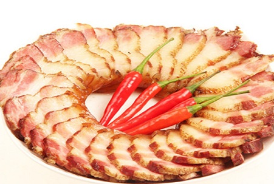
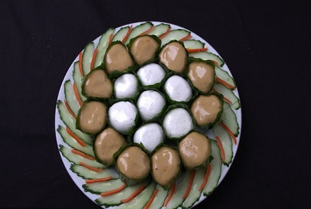
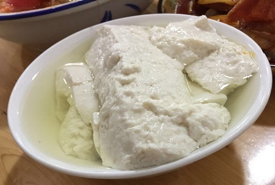
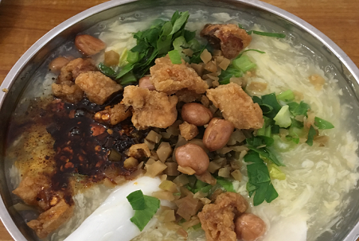
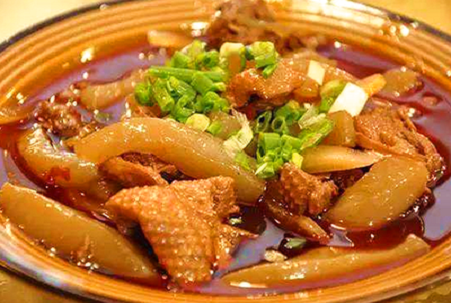
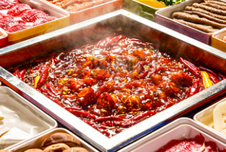

嘉州之旅
乐山，古称嘉州，历史上属古蜀国，有"海棠香国"的美誉。
首页
景点
美食
住宿
交通
旅游攻略
指南
必备信息
乐山指南
|
乐山特产
|
休闲娱乐
|
旅游资讯
乐山风景图片
|
乐山旅行社
旅游服务
乐山订房
|
乐山导游
|
乐山订票
|
乐山会议
乐山租车
|
乐山签证
登录
|
注册
乐山天气
晴
22℃
~
10℃
西南风 3级
2019年04月14日
星期日
农历己亥猪年 三月初十
首页
/
美食
正宗豆腐脑
15222
乐山豆腐脑是四川乐山特色风味小吃之一，豆花上有深红的辣椒配着翠绿香菜或芹菜，色香味俱全。

峨眉老腊肉
12325
峨眉老腊肉是四川乐山市名菜，以肉源绿色、制作工艺传承历史悠久、肉味鲜美、可长时间存放等特点深受中外游客青睐。

叶儿粑
8889
制作叶儿粑选料考究，工艺精细，具有色绿形美、细软爽口的特点，为四川乐山名小吃之一。

乐山豆花
13233
乐山豆花是四川省乐山市的小吃，具有滚、嫩、绵、白的特点。

峨眉豆腐脑
25130
豆腐脑一道著名的汉族传统小吃，常与豆腐花、豆花混用，依据各地口味不同，北方多爱咸食，而南方则偏爱甜味，亦有地区如四川乐山等喜爱酸辣口味。

雪魔芋烧鸭
23265
雪蘑芋烧鸭是四川乐山的传统特色小吃。雪蘑芋具有质地松软，香而不腻，风味独特等特点。

峨眉老腊肉
50
乐山景点乐山景点乐山景点乐山景点乐山景点乐山景点乐山景点乐山景点乐山景点乐山景点乐山景点乐山景点乐山景点乐山景点
峨眉老腊肉
50
乐山景点乐山景点乐山景点乐山景点乐山景点乐山景点乐山景点乐山景点乐山景点乐山景点乐山景点乐山景点乐山景点乐山景点
峨眉老腊肉
50
乐山景点乐山景点乐山景点乐山景点乐山景点乐山景点乐山景点乐山景点乐山景点乐山景点乐山景点乐山景点乐山景点乐山景点
峨眉老腊肉
50
乐山景点乐山景点乐山景点乐山景点乐山景点乐山景点乐山景点乐山景点乐山景点乐山景点乐山景点乐山景点乐山景点乐山景点
峨眉老腊肉
50
乐山景点乐山景点乐山景点乐山景点乐山景点乐山景点乐山景点乐山景点乐山景点乐山景点乐山景点乐山景点乐山景点乐山景点
峨眉老腊肉
50
乐山景点乐山景点乐山景点乐山景点乐山景点乐山景点乐山景点乐山景点乐山景点乐山景点乐山景点乐山景点乐山景点乐山景点
峨眉老腊肉
50
乐山景点乐山景点乐山景点乐山景点乐山景点乐山景点乐山景点乐山景点乐山景点乐山景点乐山景点乐山景点乐山景点乐山景点
峨眉老腊肉
50
乐山景点乐山景点乐山景点乐山景点乐山景点乐山景点乐山景点乐山景点乐山景点乐山景点乐山景点乐山景点乐山景点乐山景点
峨眉老腊肉
50
乐山景点乐山景点乐山景点乐山景点乐山景点乐山景点乐山景点乐山景点乐山景点乐山景点乐山景点乐山景点乐山景点乐山景点
1
2
3
4
5
上一页
下一页
乐山周边美食
{{i.name}}
Copyright © 2019.www.hjxyuanchuan.com